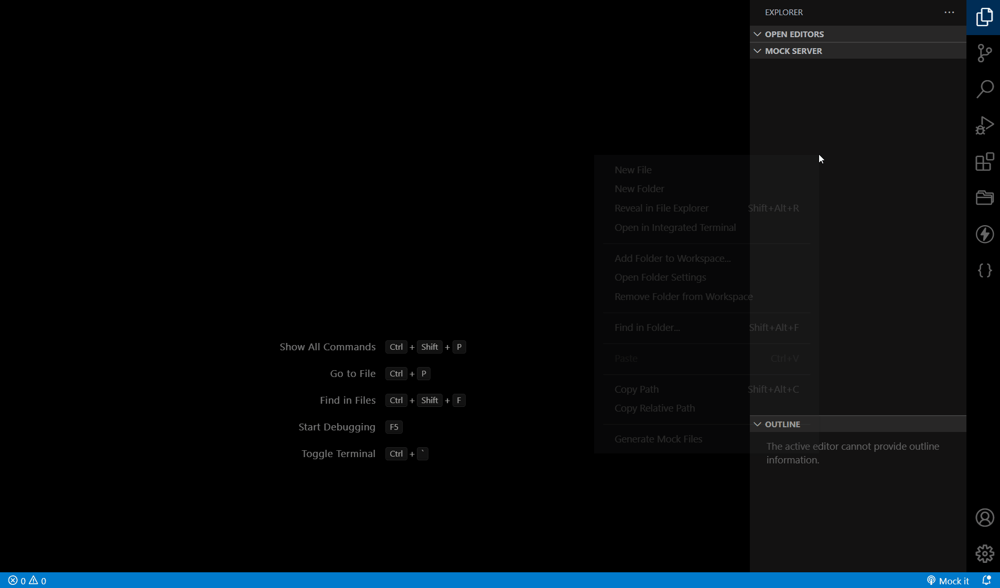

Mock Server


Get a full REST API with zero coding in less than 30 seconds
(seriously)
Created with <3 for front-end developers who need a quick back-end for prototyping and mocking.
Now also available as a VSCodeExtension
thinker.mock-server
.
Table of contents
Getting started
Install Mock Server
npm install -g @r35007/mock-serverCreate a db.json file with some data.
{
"posts": [{ "id": 1, "title": "mock-server", "author": "r35007" }],
"comments": [{ "id": 1, "body": "some comment", "postId": 1 }],
"profile": { "name": "r35007" }
}
Start Mock Server
mock-server --watch ./db.jsonNow if we go to http://localhost:3000/posts, we'll get
[{ "id": 1, "title": "mock-server", "author": "r35007" }]CLI Usage
$ mock-server --help
mock-server [options] <source>
Options:
-c, --config Path to config file [string]
-P, --port Set port [number] [default: 3000]
-H, --host Set host [string] [default: "localhost"]
-r, --root Set root directory. [string] [default: "./"]
-s, --static Set static files directory [string]
-b, --base Set base route path [string]
--db Path to database file [string]
--middlewares, --md Path to middlewares file [string]
--injectors, --in Path to Injectors file [string]
--store, --st Path to Store file [string]
--rewriters, --rw Path to Rewriter file [string]
--id Set database id property [string] [default: "id"]
--dbMode, --dm Set Db mode [string] [default: "mock"] [choices: "mock", "dev", "multi"]
--snapshots, --ss Set snapshots directory [string] [default: "./"]
--readOnly, --ro Allow only GET requests [boolean] [default: false]
--noCors, --nc Disable Cross-Origin Resource Sharing [boolean] [default: false]
--noGzip, --ng Disable GZIP Content-Encoding [boolean] [default: false]
--bodyParser, --bp Enable body-parser [boolean] [default: true]
--cookieParser, --cp Enable cookie-parser [boolean] [default: true]
-l, --logger Enable logger [boolean] [default: true]
-w, --watch Watch for changes [boolean] [default: false]
-q, --quiet Prevent console logs [boolean] [default: false]
-h, --help Show help [boolean]
-v, --version Show version number [boolean]
Examples:
mock-server db.json
mock-server --watch db.json
mock-server http://jsonplaceholder.typicode.com/db
https://r35007.github.io/Mock-Server/
Using JS Module
Install nodemon for watching changes
npm install -g nodemonCreate server.js File
const { MockServer } = require("@r35007/mock-server");
const mockServer = MockServer.Create({ root: __dirname });
mockServer.launchServer("./db.json");or
const { MockServer } = require("@r35007/mock-server");
const mockServer = MockServer.Create({ root: __dirname }); // Create Mock Server instance with custom config.
const rewriter = mockServer.rewriter({ "/api/*": "/$1" }); // /api/posts -> /posts
const defaults = mockServer.defaults();
const resources = mockServer.resources("./db.json");
const homePage = mockServer.homePage();
const app = mockServer.app;
app.use(rewriter); // Make sure to use this at first, before all the resources
app.use(defaults); // Add default Middlewares.
app.use(resources); // Add Database
app.use(homePage); // Create the Mock Server Home Page
app.use(mockServer.pageNotFound); // Middleware to return `Page Not Found` as response if the route doesn't match
app.use(mockServer.errorHandler); // Default Error Handler
mockServer.startServer();
Now go to terminal and type the following command to start the Mock Server.
nodemon server.js
For more api reference please click here,
Database
We can add the database in three ways. Using setData, setDb or resources.
The easy and efficient way to add the database is using resources.
Create db.json
{
"posts": [{ "id": 1, "title": "mock-server", "author": "r35007" }],
"comments": [{ "id": 1, "body": "some comment", "postId": 1 }],
"profile": { "name": "r35007" }
}
Now in server.js
const { MockServer } = require("@r35007/mock-server");
const mockServer = MockServer.Create({ root: __dirname }); // Create Mock Server instance with custom config.
const app = mockServer.app;
// Adds Database and returns a new express router
const resources = mockServer.resources("./db.json");
app.use(resources);
// Add new database. This will be added to the existing database and will not override the existing route if exist
const newDb = {
users: [
{ id: 1, name: "foo" },
{ id: 2, name: "bar" },
],
profile: { name: "foo" }, // will not be added since its already exist in resource
};
const newResource = mockServer.resources(newDb);
app.use(resources);
mockServer.startServer();
Database with Custom Options
We can create database with custom injectors, middlewares, dbMode etc..
For Example: server.js
const { MockServer } = require("@r35007/mock-server");
const mockServer = MockServer.Create({ root: __dirname }); // Create Mock Server instance with custom config.
const app = mockServer.app;
// Created new database with custom injectors and middlewares.
// These injectors and middlewares will not added to the global instance of the Mock Server
// Which means that these injectors and middleware will only be applied to todos database
const todos = {
todos: [
{ id: 1, title: "Todo 1", completed: false },
{ id: 2, title: "Todo 2", completed: false },
],
};
const injectors = [{ routes: "/(.*)", delay: 1000, middlewares: ["log"] }];
const middlewares = {
log: (req, res) => {
console.log(req.url);
res.send(res.locals.data);
},
};
const todosResource = mockServer.resources(todos, {
injectors,
middlewares,
});
app.use(todosResource);
mockServer.startServer();
Please check resources api for more custom option reference.
Middlewares
We can use the middlewares by setting it using setData or setMiddlewares.
For Example: middlewares.js
const isAuthorized = (_req) => true;
const auth = (req, res, next) => {
if (isAuthorized(req)) return next(); // continue to Mock Server router
res.sendStatus(401);
};
const DataWrapper = (req, res, next) => {
res.locals.data = {
status: "Success",
message: "Retrieved Successfully",
result: res.locals.data,
};
next();
};
module.exports = (mockServer) => {
const { app, routes, data, getDb, getStore } = mockServer || {};
const { config, db, injectors, middlewares, rewriters, store } = data || {};
// Our Global middleware logic here before setting default middlewares by the MockServer.
return {
_globals: [auth], // These middlewares will be used after the default middlewares
DataWrapper, // This can used in as a specific route middleware using route configs
};
};
server.js
const { MockServer } = require("@r35007/mock-server");
const mockServer = MockServer.Create({ root: __dirname });
const app = mockServer.app;
const defaults = mockServer.defaults();
app.use(defaults);
// Always set middlewares after using default middlewares.
// These middlewares will be set to mockServer instance and can be accessed across all routes.
mockServer.setMiddlewares("./middlewares.js");
app.use(mockServer.middlewares._globals);
const resources = mockServer.resources({
"/fetch/users1/customMiddleware": {
_config: true,
fetch: "http://jsonplaceholder.typicode.com/users",
middlewares: ["DataWrapper"], // Picks the DataWrapper middleware from middlewares.js
},
});
app.use(resources); // Add Database
Please check Setters for more api reference.
Direct Middleware Use
Usually all the middlewares in the route will be wrapped by some helper middlewares to set delay, get fetch data,
set locals etc..
If we wish to provide a middlewares without any wrappers set directUse to true.
For Example: db.js
const db = {
"/static/app1": express.static("./path/to/build/folder/app1")
"/static/app2": { _config: true, middlewares: express.static("./path/to/build/folder/app2"), directUse: true }
"/fetch/users": {
_config: true,
fetch: "http://jsonplaceholder.typicode.com/users",
middlewares:(req, res) => { res.send("custom response")},
directUse: true
}
}
Note:
/fetch/userswont work since it wont be wrapped by helper middlewares and so no other route config would work except the given middleware if provided.
Injectors
Here we are explicitly injecting delay, middlewares, statusCode to the
/posts route.
We can add any route configs to a specific or to a group of routes using Injectors.
- Injectors use
path-to-regexppackage for route pattern recognition. - Click path-to-regexp for more details.
For Example : injectors.json
[
{ "routes": "/posts", "delay": 2000 } // Adds delay of 2 seconds only to /posts route
{ "routes": "/comments/:id", "statusCode": 500 } // Adds statusCode of 500 for all the route that matches the pattern /comments/:id
]
server.js
const { MockServer } = require("@r35007/mock-server");
const mockServer = MockServer.Create({ root: __dirname, dbMode: "fetch" });
const resources = mockServer.resources({
"/posts": "http://jsonplaceholder.typicode.com/posts", // have delay of 2 seconds
"/comments/1": "http://jsonplaceholder.typicode.com/comments/1", // sets status code of 500
"/comments/2": "http://jsonplaceholder.typicode.com/comments/2", // sets status code of 500
});
const app = mockServer.app;
// These injectors will be set to mockServer instance and be access across all routes
mockServer.setInjectors("./injectors.json");
app.use(mockServer.middlewares._globals);
// Can also set injectors using setData
// mockServer.setData({ injectors: "./injectors.json"});
app.use(resources); // Add Database
Please check Setters for more api reference.
Override Existing Route Configs
Setting override flag to true helps to override the existing config of that route.
For example :
injectors.json
[
{
"routes": ["/injectors/2"],
"override": true,
"mock": "This data is injected using the injectors by matching the pattern '/injectors/2'."
},
{
"routes": ["/injectors/:id"],
"override": true,
"exact": true,
"statusCode": 200,
"mock": "This data is injected using the injectors by exactly matching the route '/injectors/:id'."
},
{
"routes": ["/(.*)"],
"override": true,
"middlewares": ["...", "CustomLog"]
}
]
Note: Use
["..."]If we want to add the existing middlewares.
Common Route Configs
Using wildcards we can set a common route configs to all the routes.
/(.*) - matches all the routes.
For example :
injectors.json
[
{
"routes": ["/(.*)"],
"description": "This Description is injected using the injectors. Set 'Override' flag to true to override the existing config values."
},
{
"routes": ["/(.*)"],
"override": true,
"middlewares": ["...", "CustomLog"]
}
]
Make sure we give /(.*) at the end of the injectors.json object to set route configs to
all the routes.
Store
Store used to store any values which can be used later for any purpose like response manipulation or logging etc..
We can set store values using mockServer.setStore or using mockServer.setData
Route Store
Route store helps to store any values which can be accessed on by that particular route.
This stores values cannot be able to accessed by the other routes.
Route Store can be accessed using res.locals.routeConfig.store inside the middleware.
The middlewares _CrudOperations, _IterateRoutes, _IterateResponse uses the
Route store to manipulate response.
Local Store
Local Store helps to store and share data between routes.
This can be accessed using res.locals.getStore() inside the middleware.
Rewriters
Create a rewriters.json file. Pay attention to start every route with /.
- Rewriters use
express-urlrewritepackage to rewrite the urls. - Click here for more information about url rewrite.
rewriters.json
{
"/api/*": "/$1",
"/:resource/:id/show": "/:resource/:id",
"/posts/:category": "/posts?category=:category",
"/articles?id=:id": "/posts/:id"
}
server.js
const mockServer = MockServer.Create();
const app = mockServer.app;
const rewriters = mockServer.Rewriter("./rewriters.json");
app.use(rewriters); // Make sure to use it before all the resources
Now we can access resources using additional routes.
/api/posts # → /posts
/api/posts/1 # → /posts/1
/posts/1/show # → /posts/1
/posts/javascript # → /posts?category=javascript
/articles?id=1 # → /posts/1
Helper Middlewares
Use the helper middleware to speedup our development and for ease of access.
IterateResponse
setting middleware to _IterateResponse helps to send we a iterate the response one after the other
in
the mock array for each url hit.
example:
{
"/middleware/example/_IterateResponse": {
"_config": true,
"description": "This route iterates through each data. Try to hit again to see the data change. Note: The data must be of type array",
"fetch": {
"url": "http://jsonplaceholder.typicode.com/photos"
},
"middlewares": ["_IterateResponse"]
}
}
Now go and hit http://localhost:3000/middleware/example/_IterateResponse. For each hit we will get the next object in an array from the photos data.
IterateRoutes
setting middleware to _IterateRoutes helps to send a iterate the route one after the other in the
mock
array for each url hit.
example:
{
"/middleware/example/_IterateRoutes": {
"_config": true,
"description": "This route iterates through each route provide in the mock. Try to hit again to see the route change. Note: The data must be of type array",
"mock": ["/injectors/1", "/injectors/2"],
"middlewares": ["_IterateRoutes"]
},
"/injectors/1": "/injectors/1 data",
"/injectors/2": "/injectors/2 data"
}
Now go and hit http://localhost:3000/middleware/example/_IterateRoutes. For each hit the route is passed to next matching url provided in the mock list.
AdvancedSearch
_AdvancedSearch middleware helps to filter and do the advanced search from data.Following are the
operations performed by this method.
Filter
Use . to access deep properties
GET /posts?title=mock-server&author=sivaraman
GET /posts?id=1&id=2
GET /comments?author.name=sivaraman
Paginate
Use _page and optionally _limit to paginate returned data.
In the Link header we'll get first, prev, next and
last links.
GET /posts?_page=7
GET /posts?_page=7&_limit=20
10 items are returned by default
Sort
Add _sort and _order (ascending order by default)
GET /posts?_sort=views&_order=asc
GET /posts/1/comments?_sort=votes&_order=asc
For multiple fields, use the following format:
GET /posts?_sort=user,views&_order=desc,ascSlice
Add _start and _end or _limit (an X-Total-Count header is
included in the response)
GET /posts?_start=20&_end=30
GET /posts/1/comments?_start=20&_end=30
GET /posts/1/comments?_start=20&_limit=10
Works exactly as Array.slice
(i.e. _start is inclusive and _end exclusive)
Operators
Add _gte or _lte for getting a range
GET /posts?views_gte=10&views_lte=20Add _ne to exclude a value
GET /posts?id_ne=1Add _like to filter (RegExp supported)
GET /posts?title_like=serverFull text search
Add q or _text
GET /posts?q=internet&_text=successCrudOperations
_CrudOperations middleware handles all the crud operations of the given data.
By default it also handles the _AdvancedSearch operations.
Note: The mock must of type Array of objects and must contain a unique value of attribute
id. Thisidattribute can also be changes usingconfig.id.
For example: config.json
{
"id": "_id"
}
Others
_FetchTillDatahelps to fetch the data from url until it get a success data. Once its get the data the fetch call stops and returns the existing data for other route hit._SetFetchDataToMocksets every fetchData to Mock. This overrides the existing mock with thefetchData._SetStoreDataToMocksets every store data to Mock data. This overrides the existing mock with thestore._MockOnlysends we only Mock data even if there is anyfetchDataorstoredata._FetchOnlysends we only Fetch data even if there is any_mockorstoredata._ReadOnlyforbidden every Http method calls exceptGETcall.
App Config
We can provide our own config by passing the config object in the MockServer constructor.
For Example : server.js :
// These are default config. We can provide our custom config as well.
const path = require("path");
const public = path.join(process.cwd(), "public");
const config = {
port: 3000, // Set Port to 0 to pick a random available port.
host: "localhost", // Set Host to empty string to pick the Local Ip Address.
root: process.cwd(), // Root path of the server. All paths refereed in db data will be relative to this path
base: "", // Mount db on a base url
id: "id", // Set db id attribute.
dbMode: "mock", // Give one of 'multi', 'fetch', 'mock'
static: public, // Path to host a static files. Give empty string to avoid hosting public folder by default
reverse: false, // Generate routes in reverse order
logger: true, // Enable api logger
noCors: false, // Disable CORS
noGzip: false, // Disable data compression
readOnly: false, // Allow only GET calls
bodyParser: true, // Enable body-parser
cookieParser: true, // Enable cookie-parser
quiet: false, // Disable console logs
};
new MockServer(config).launchServer("./db.json");
dbMode
The object which has _config: true are considered as route configs.
All other values and objects are considered as direct values.
Db mode defines on what config does the direct route value to be assigned.
The object with _config: true will not be changed on any dbMode.
For Example :
dbModeismock- All direct values will be assigned tomockattribute
const db = {
route1: "My Response", // "/route1": { _config: true, mock: "My Response" }
route2: { data: "My Response" }, // "/route2": { _config: true, mock: { data: "My Response" } }
route3: [], // "/route3": { _config: true, mock: [] }
route4: { _config: true, fetch: "path/to/file" }, // "/route4": { _config: true, fetch: "path/to/file" }
};
dbModeisfetch- All direct values will be assigned tofetchattribute
const db = {
route1: "path/to/file", // "/route1": { _config: true, fetch: "path/to/file" }
route2: { url: "path/to/file" }, // "/route2": { _config: true, fetch: { url: "path/to/file" } }
route3: { _config: true, mock: "My Response" }, // "/route3": { _config: true, mock: "My Response" }
};
dbModeismulti- Only directstringvalue will be assigned tofetchattribute. All other values will be assigned tomockattribute
const db = {
route1: "path/to/file", // "/route1": { _config: true, fetch: "path/to/file" }
route2: { data: "My Response" }, // "/route2": { _config: true, mock: { data: "My Response" } }
route3: [], // "/route3": { _config: true, mock: [] }
route4: { _config: true, mock: "My Response" }, // "/route4": { _config: true, mock: "My Response" }
};
Route Config
Route config helps to define a config such as delay. statuscode to a specific route.
Routes which as a object with _config: true as considered as a route config.
interface RouteConfig {
_config?: boolean; // Make sure to set this to true to use this object as a route configuration.
id?: string; // sets a base64 encoded route. If not given, will be generated.
description?: string; // Description about this Route.
statusCode?: number; // Set custom status code in number between 100 to 600.
delay?: number; // Set custom delay in milliseconds.
fetch?: string | AxiosRequestConfig; // Set path to fetch a file. Path will be relative to `config.root`. Always make fetch call first.
fetchCount?: number; // Set custom fetch count. Set to -1 to fetch infinite times. Default: 1
mock?: any; // Set custom Mock Response. If fetch is given then it returns the fetch response.
mockFirst?: boolean; // If true, It returns the mock response first else returns the fetch response . Default: false
skipFetchError?: boolean; // If true it skips any fetch error and send the mock data as response. Default: false.
store?: object; // Helps to store any values for later use
middlewares?: express.RequestHandler | Array<express.RequestHandler> | string; // Set custom middleware specific to this route
// This will be auto generated from the fetch call it makes.
fetchData?: {
status?: number;
message?: string;
isError?: boolean;
headers?: any;
response?: any;
stack?: any;
};
_isFile?: boolean;
_request?: AxiosRequestConfig;
_extension?: string;
}
Note: Object without
_config: truewill be considered as a direct mock response. Please make sure we setconfig: trueto config the route.
Set Custom Delay
delay helps we to set a custom delay to our routes.
{
"/customDelay": {
"_config": true,
"delay": 2000, // The delay must be in milliseconds and of type number
"description": "Note: give delay in milliseconds",
"mock": "This is response is received with a delay of 2000 milliseconds"
}
}
Now if we go to http://localhost:3000/customDelay, we'll get the response in a delay of 2 seconds.
Set Custom StatusCode
statusCode helps we set a custom statusCode to our routes.
It must be of type number and between 100 to 600.
{
"/customStatusCode": {
"_config": true,
"statusCode": 500,
"mock": "This is response is received with a statusCode of 500"
}
}
Now if we go to http://localhost:3000/customStatusCode,
we'll
get the response with a 500 statusCode
Fetch File or URL
fetch helps we get data from url.
The url can either be a http server or a local file.
Fetch File
Give a absolute or a relative path to fetch any file.
{
"/fetch/local/file": {
"_config": true,
"description": "The given fetch path will be relative to the root path given in config",
"fetch": "./data/users.json"
}
}
Note: The given path will be relative to
config.root.
Fetch Data From URL
{
"/fetch/posts/:id": {
"_config": true,
"fetch": "https://jsonplaceholder.typicode.com/posts/${req.params.id}"
}
}
Axios Fetch Request
We can also give a fetch as a axios request object with custom options.
{
"/fetch/posts/:id": {
"_config": true,
"description": "Give the `fetch` attribute as a axios request object. enclose the value with ${<variables>} to pass the req values",
"fetch": {
"method": "GET",
"url": "http://jsonplaceholder.typicode.com/posts",
"params": "${req.params.id}"
}
}
}
http://localhost:3000/fetch/posts/2.
Note: To pass any options from the route set the option value as
${<option Name>}
reserved key words :
${config}- get all config values${req}- get all req values
Fetch Count
In Route Config setting fetchCount will helps to limit the number of fetch calls.
By Default the fetchCount is set to 1.
The fetch data will be set to fetchData.
db.json
{
"/fetch/todos/fetchCount/3/times": {
"_config": true,
"description": "By default the fetch will be called only one time. We can limit or extend the number of fetch calls using 'fetchCount' attribute",
"fetch": "http://jsonplaceholder.typicode.com/todos",
"fetchCount": 3
},
"/fetch/albums/fetchCount/Infinite/times": {
"_config": true,
"description": "Setting 'fetchCount' to -1 time will helps to make a fetch call on each and every url hit without any limit. By This way we always get a new fresh data from the fetch url.",
"fetch": "http://jsonplaceholder.typicode.com/albums",
"fetchCount": -1
}
}
http://localhost:3000/fetch/todos/fetchCount/3/times. - Makes fetch call only for 3 times.
http://localhost:3000/fetch/todos/fetchCount/Infinite/times. - Makes fetch call Infinite times.
Skip Fetch Error
If skipFetchError is set to true, It will skip any error in fetch call and instead of returning that
fetch error it gives we the mock data.
{
"/fetch/404/skipFetchError": {
"_config": true,
"description": "Bu default fetch returns the actual error if occur. If we set `skipFetchError` flag to true. the If any error occur in fetch call it will then skips the fetch error and return we the mock data",
"fetch": "http://localhost:3000/404",
"skipFetchError": true,
"mock": "This data is returned due to some error in fetch call. We can see the error in 'fetchError' attribute",
"fetchCount": -1
}
}
Specific Middlewares
We can add n number of middleware to a route which helps we to manipulate or log the data.
Please check Middlewares fro more reference.
db.js
const db = {
"/fetch/users1/customMiddleware": {
_config: true,
fetch: "http://jsonplaceholder.typicode.com/users",
middlewares: ["DataWrapper"], // Picks the DataWrapper middleware from middlewares.js
},
"/fetch/users2/customMiddleware": {
_config: true,
fetch: "http://jsonplaceholder.typicode.com/users",
middlewares: (req, res, next) => {
next();
},
},
};
Locals
res.locals helps to access the current route config, fetchData, store
etc..
Here are the available options in res.locals
interface Locals {
routePath: string;
routeConfig: RouteConfig;
data: any; // response will be sent using this attribute value.
config: Config; // gives we the current mock server configuration.
getStore(): object;
getDb(): object;
}
Dynamic Route Config
RouteConfigs are mutable. Means we can able to modify the routeConfigs in runtime using middleware. For Example:
middleware.js
exports._FetchTillData = (_req, res, next) => {
const locals = res.locals;
const routeConfig = locals.routeConfig;
if (!routeConfig.fetchData) return next();
if (!routeConfig.fetchData.isError) {
// If fetchData has no error then stop fetching anymore
routeConfig.fetchCount = 0; // setting fetchCount to zero stops fetching
} else if (
routeConfig.fetchCount !== undefined &&
routeConfig.fetchCount == 0
) {
// If fetchData has any error then keep on fetching
routeConfig.fetchCount = -1; // setting fetchCount to -1 does an infinite fetch
}
next();
};
The above middleware helps to fetch the data from url until it gets a valid success response.
Home Page Routes
Home Page- http://localhost:3000Db- http://localhost:3000/_dbRewriters- http://localhost:3000/_rewritersRoutes- http://localhost:3000/_routesStore- http://localhost:3000/_storeReset Db- http://localhost:3000/_reset
API
MockServer
returns the instance of the mockServer.
const { MockServer } = require("@r35007/mock-server");
const mockServer = new MockServer("./config.json");
Params
| Name | Type | Required | Description |
|---|---|---|---|
| config | string/object | No | This object sets the port, host etc.. |
Create
returns the single instance of the mockServer.
const { MockServer } = require("@r35007/mock-server");
const mockServer = MockServer.Create("./config.json");
Params
| Name | Type | Required | Description |
|---|---|---|---|
| config | string / object | No | This object sets the port, host etc.. |
Destroy
Destroy simply stops the server without any exception and resets the server. returns promise
const { MockServer } = require("@r35007/mock-server");
let mockServer = MockServer.Create();
await MockServer.Destroy(mockServer);
Params
| Name | Type | Required | Description |
|---|---|---|---|
| mockServer | instance | No | Instance of the MockServer to Destroy |
launchServer
It validates all the params in the MockServer, loads the resources and starts the server.
mockServer.launchServer("./db.json", {
injectors: "./injectors.json",
middlewares: "./middleware.js",
rewriters: "./rewriters.json",
store: "./store.json",
router: express.Router(),
log: false,
});
Params
| Name | Type | Required | Description |
|---|---|---|---|
| db | string/object/method | No | Set db resource |
| options | object | No | option to create db resource |
[options]
| Name | Type | Required | Description |
|---|---|---|---|
| injectors | string/object/method | No | injectors to inject routeconfig to this db |
| middlewares | string/object/method | No | middlewares of this db |
| store | string/object/method | No | store of this db |
| rewriters | string/object/method | No | rewriters of this db |
| router | Express.Router | No | Custom Router |
| log | boolean | No | If tru it logs the setter log |
rewriter
Sets the route rewrites and return the router of the rewriters;
const rewriters = mockServer.rewriter("./rewriters.json", {
log: false,
root: __dirname,
});
app.use(rewriters);
Params
| Name | Type | Required | Description |
|---|---|---|---|
| rewriters | string / object | No | Give the Rewrites |
| options | object | No | option to set rewriters |
[options]
| Name | Type | Required | Description |
|---|---|---|---|
| root | string | No | To require rewriter file relative to this path |
| log | boolean | No | If true it logs the rewriters setting log |
defaults
returns the list of default middlewares. Also helps to host a static directory.
const defaults = mockServer.defaults({ static: "./public", readOnly: true });
app.use(defaults);
- options
staticpath to static filesloggerenable logger middleware (default: true)noGzipdisable Compression (default: false)noCorsdisable CORS (default: false)readOnlyaccept only GET requests (default: false)bodyParserenable body-parser middleware (default: true)cookieParserenable cookie-parser middleware (default: true)
resources
Create db resources. It uses global injectors, middlewares and config to crete db resource.
const resources = mockServer.resources("./db.json");
app.use(resources);
Create db resources with custom injectors and middlewares. It won't use global injectors and middlewares. It sets only db and not the injectors or middlewares.
const resources = mockServer.resources("./db.json", {
injectors: "./injectors.json",
middlewares: "./middleware.js",
root: __dirname,
dbMode: "mock",
reverse: false,
router: express.Router();
log: false
});
app.use(resources);
Params
| Name | Type | Required | Description |
|---|---|---|---|
| db | string/object/method | No | Set db resource |
| options | object | No | option to create db resource |
[options]
| Name | Type | Required | Description |
|---|---|---|---|
| root | string | No | root to get db from a file |
| dbMode | 'mock'/ 'fetch'/'multi' | No | dbMode to create resource |
| injectors | string/object/method | No | injectors to inject routeconfig to this db |
| middlewares | string/object/method | No | middlewares of this db |
| reverse | boolean | No | If true it creates db in reverse order |
| router | Express.Router | No | Custom Router |
| log | boolean/string | No | If tru it logs the resources setting log |
homePage
Returns Mock Server Home Page router.
const homePage = mockServer.homePage();
app.use(homePage);
Params
| Name | Type | Required | Description |
|---|---|---|---|
| log | boolean | No | If tru it logs the resources setting log |
startServer
Returns a Promise of Server. - helps to start the app server externally
const server = await mockServer.startServer(3000, "localhost");Params
| Name | Type | Required | Description |
|---|---|---|---|
| port | number | No | Set custom Port |
| host | string | No | Set custom Host |
stopServer
Returns a Promise of Boolean. - helps to stop the app server externally
const isStopped = await mockServer.stopServer();resetServer
Clears out all values and resets the server for a fresh start.
By default this method will be called on mockServer.stopServer() method.
mockServer.resetServer();resetDb
Returns the routes that are reset.
const routes = mockServer.resetDb(); // If param is not present, it resets all the routes.Params
| Name | Type | Required | Description |
|---|---|---|---|
| ids | string[] | No | Give List of route ids to reset |
| routePaths | string[] | No | Give List of routePaths to reset |
pageNotFound
It is a middleware to handle a page not found error. Please use it at the end of all routes.
app.use(mockServer.pageNotFound);errorHandler
It is a middleware to handle a any error occur in server. Please use it at the end of all routes.
app.use(mockServer.errorHandler);Getters
// Please avoid directly modify or setting values to these variable.
// Use Setter method to modify or set any values.
// server, port, address, listeningTo will be undefined when server is stopped
const port: number | undefined; // gives current running port.
const server: Server | undefined; // gives current running server.
const address: string | undefined; // gives host ip address.
const listeningTo: string | undefined; // gives -> http://${host}:${port}/${base} -> http://localhost:3000/api
const app = mockServer.app;
const data = mockServer.data;
// const { db, injectors, middlewares, rewriters, config, store } = mockServer.data
const db = mockServer.db;
const middleware = mockServer.middleware;
const injectors = mockServer.injectors;
const rewriters = mockServer.rewriters;
const config = mockServer.config;
const store = mockServer.store;
const initialDb = mockServer.initialDb;
Setters
mockServer.setData({ db, injectors, middlewares, rewriters, store, config });
//or
// Please follow the same following order of setting the data
// If merge param is true. it adds the data with the existing data.
mockServer.setConfig(config, { root, merge, log });
mockServer.setMiddlewares(middlewares, { root, merge, log });
mockServer.setInjectors(injectors, { root, merge, log });
mockServer.setRewriters(rewriters, { root, merge, log });
mockServer.setStore(store, { root, merge, log });
mockServer.setDb(Db, { root, merge, log });
Validators
These helps to return a valid data from provided file path or object.
const {
getValidDb,
getValidMiddlewares,
getValidInjectors,
getValidRewriters,
getValidConfig,
getValidStore,
getValidRouteConfig,
} = require("@r35007/mock-server/dist/server/utils/validators");
const options = {
reverse: true, // If true the db will be generated in reverse order
dbMode: "fetch", // The direct route value will be set to fetch
};
const root = "./";
const db = getValidDb(
"db.json", // db or HAR
{ injectors, root, reverse, dbMode, mockServer }
); // returns valid Db combined with the given injectors. Also helps to extract a db from HAR file. internally use getValidRouteConfig
const middleware = getValidMiddlewares(middlewares, { root, mockServer }); // returns a valid middleware along with the default middlewares
const injectors = getValidInjectors(injectors, { root, mockServer }); // returns a valid injectors. internally use getValidInjectorConfig
const rewriters = getValidRewriters(rewriters, { root, mockServer }); // returns a valid rewriters
const config = getValidConfig(config, { root, mockServer }); // returns a valid config combined with the default configs
const store = getValidStore(store, { root }); // returns a valid store
const routeConfig = getValidRouteConfig(route, routeConfig); // returns a valid routeconfig used by getValidDb
const injectorConfig = getValidInjectorConfig(route, routeConfig); // returns a valid injectorsConfig used by getValidInjectors
const route = getValidRoute(route); // splits route by comma and adds a slash ('/') prefix to the routes
VS Code Extension

Author
Sivaraman - sendmsg2siva.siva@gmail.com
License
MIT